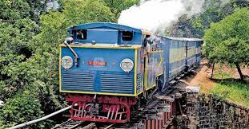
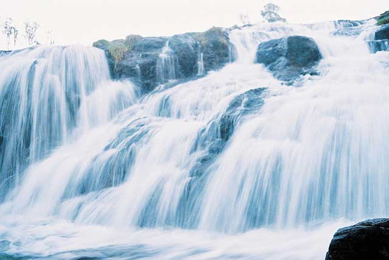
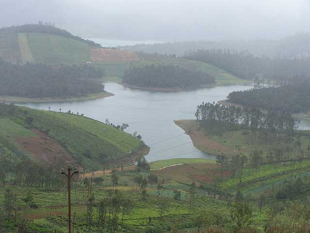

OOTY
| Images |
Description |
 |
The Largest rose gardens in India, the Government Rose Gardens lie on the slopes of the Elk Hill at an elevation of 2200 meters above sea level. It also has one of the largest collections of roses with more than 20,000 different varieties. |
|  |
Declared as a UNESCO world heritage site, the railways were built by the British in 1908. The trains are still powered using the traditional steam engines. |
|  |
Known as a sacred place for the Toda people, Pykara River flows through the plateau and form several cascades and waterfalls. The Pykara falls are one of the most popular tourist attractions in Ooty and are famous for the shola trees, Toda settlements and wildlife. |
|  |
The reason I came to ooty was to actually visit the aforementioned Doddabetta peak but wasn’t quite satisfied with amount of indulgence I was seeking with the nature. Although It was suggested by a local there and wasn’t on my itinerary, this place made me love my visit to ooty. |